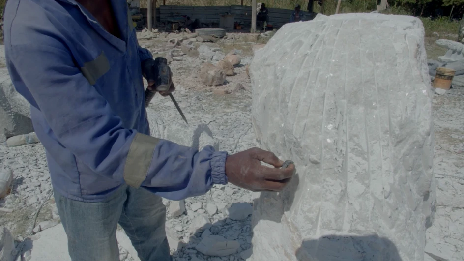
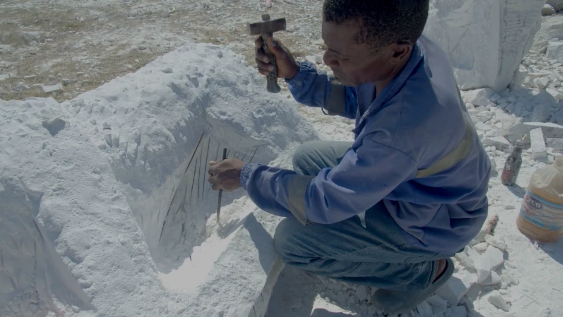
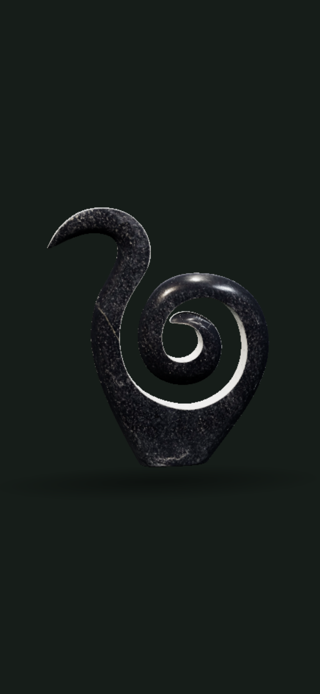

WELCOME TO HOUSE OF MABWE
Stone sculpture.
Made in Zimbabwe.
We present works by Zimbabwean artists, bringing their sculptures and the stories behind them to a wider audience. This is an introduction to the people, the stone and the work of making.
THE STONE
It begins with the stone.
Across Zimbabwe, sculptors choose stone for its colour, texture and structure. The journey from a stone source to a workshop is part of the work that happens before carving begins.
This route illustrates transport between the Guruve region and Harare, not the documented journey of an individual sculpture.

THE ARTIST
Listening to the stone.
Some artists begin with a drawing. Others study the block until a shape suggests itself. Its natural lines, colour and imperfections may influence what they decide to make.
“Each stone is a sculpture in waiting, the stone tells me what to do.”
William Murenza, Zimbabwean sculptor Source

THE MAKING WORKSHOP FOOTAGE
One cut at a time.
The artist removes stone little by little, adjusting the form as it develops. Every cut requires judgment: what is removed cannot simply be put back.
THE FORM
The shape emerges.
The sculptor works around the stone, opening spaces and refining the curves. A careful balance is needed between the shape being made and the material left to support it.
AN ILLUSTRATION OF THE CARVING PROCESS
THE FINISH
Revealing the colour.
Finer abrasives smooth the carved surface. Depending on the stone and the artist, polishing can deepen its natural colour, while other areas are left rough.
Carving and polishing are illustrated using the form of Coil.

THE FINISHED WORK
Coil
By Douglas Musekiwa, Zimbabwe
One work among many, shaped by an individual artist's ideas, experience and decisions.
HOUSE OF MABWE
The people behind the work.
House of Mabwe was founded to introduce Zimbabwean stone sculpture to a wider audience. We bring together works by individual artists, giving each sculpture and its maker the attention they deserve.
Discover the collection